In my opinion, the lights on a Tornado aren't great, compared with other European & Japanese marques. The reflector area is just not big enough or shaped properly. This is a consequence of trading off a functional shape with an aesthetically pleasing one, and the Tornado is certainly one of the prettiest bikes on the road.
55W Halogen bulbs don't put out much light either. About 1500 lumens is all you'll get out of a standard bulb. A 100W bulb will double the output, but the reflector is plastic, and won't stand the extra heat produced
Enter the High Intensity Discharge bulb.
A 55W 4300k lamp produces 5300 lumens, more than 4 times that of a halogen lamp of equal power, while dissipating
less heat.
There are a couple of drawbacks though :-
1. each bulb requires a ballast - about the size of the palm of your hand - so it needs a mounting place.
2. the light is produced by an arc, not a filament, so the pattern of the light source is different to that for
which the reflector was designed.
3. the starting current peaks at about 20A, but the OEM fuse is slow blow, so it will withstand it - for a good while. Best to increase it to 15A
4. the arc takes 5 - 10 secs to reach full intensity, so it's best not to switch off the low beam when the high
is on. (See modified lights circuit) If you do this mod, the main lighting fuse will
need to be uprated to 25A.
5. add a 15A fuse in each of the low & high beam circuits
| 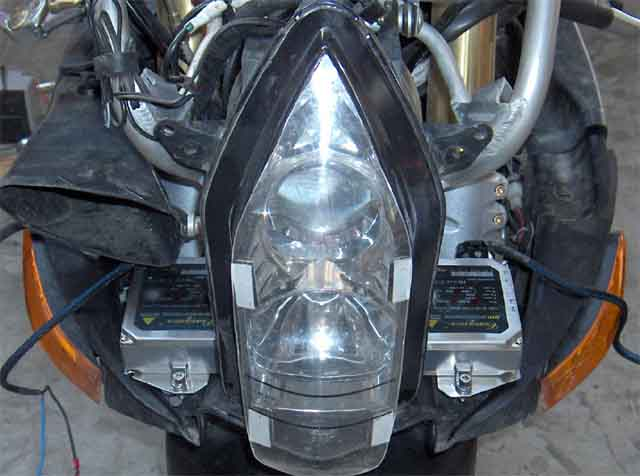 | 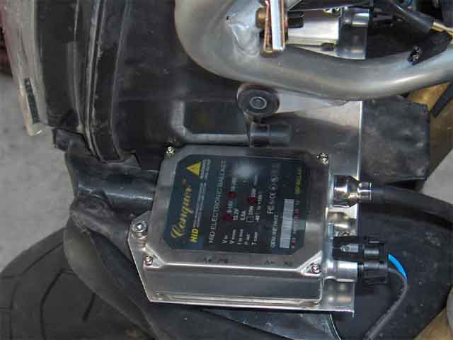 |
| 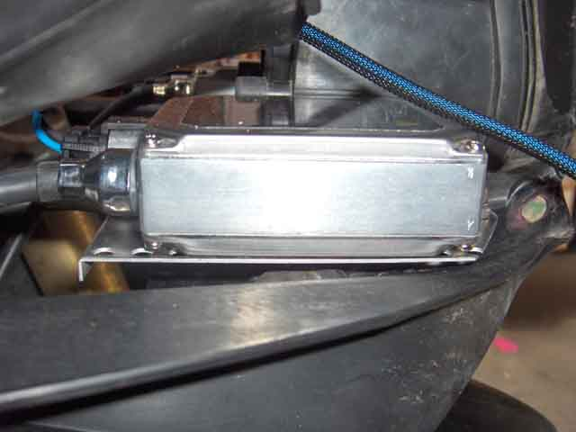 | 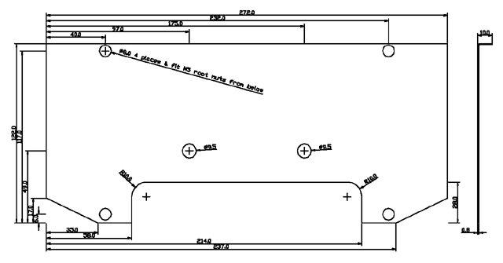 |
The ballasts are mounted to a 0.8 mm aluminium plate, which slips between the base of the headlamp housing and it's plastic mounting panel. 5 mm root nuts are swaged to the plate and used to screw the ballasts down.
| 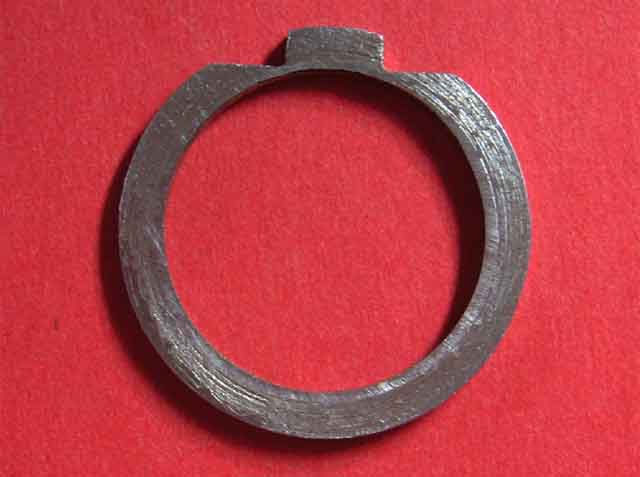 | 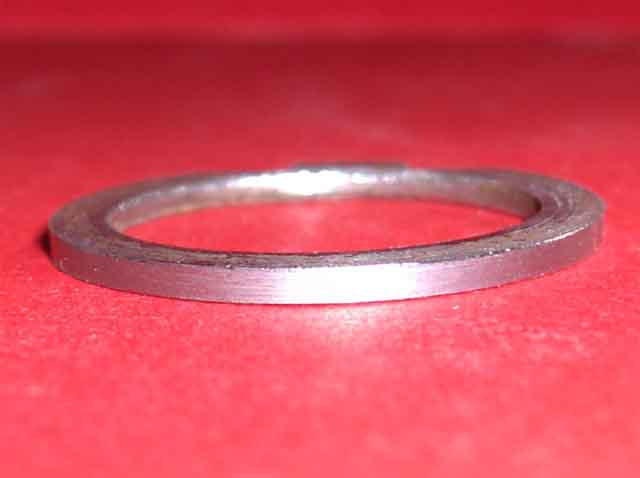 |
| 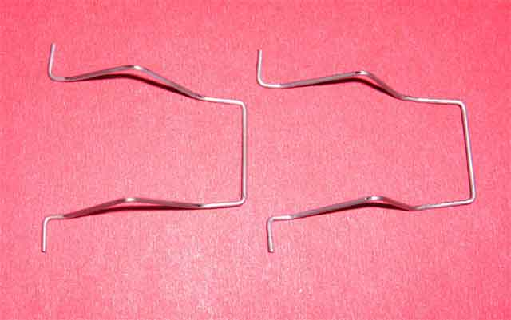 | 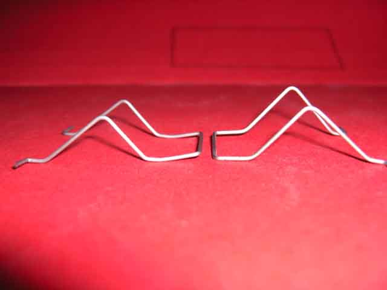 |
The light source of the HID H7 lamp is slightly forward of the Halogen lamp. To compensate, a spacer was fabricated as shown. The lamp clip requires modification as well, to allow for the increased lamp base height.
The resultant low beam light output is a marked improvement on the original, and well worth the modification.
| 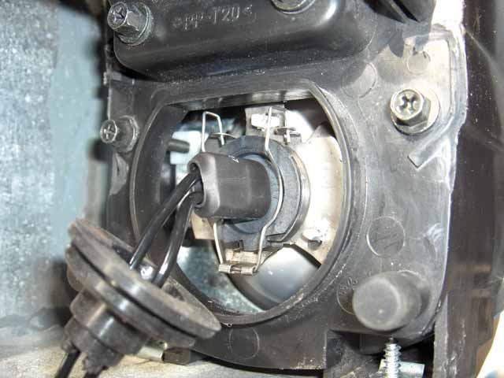 | 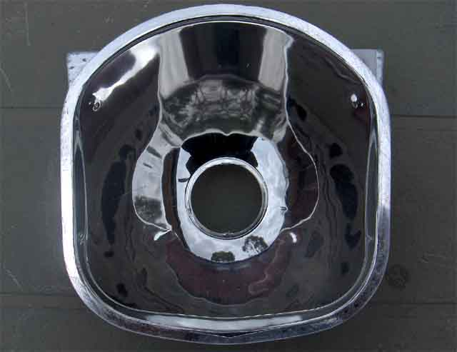 | 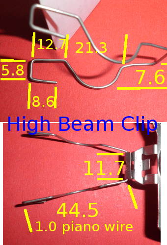 |
The high beam lamp is a little more of a problem. My reflector mounting tabs have broken off (noticed this a month
after the warranty ran out!), so I've got to come up with another method of securely fixing the lamp.
The other problem, and this is generic, is that the reflector is rubbish! It's moulded in plastic and poorly done. If
you look into it, you will see that reflections that should be smooth curves, are in fact nothing like it. This
accounts for the uneven light pattern
I'll leave this until I can come up with a way of producing an acceptable beam pattern.
Now if I could only control the low beam so that it stayed level when tipped into a corner, I'd be grinnin'